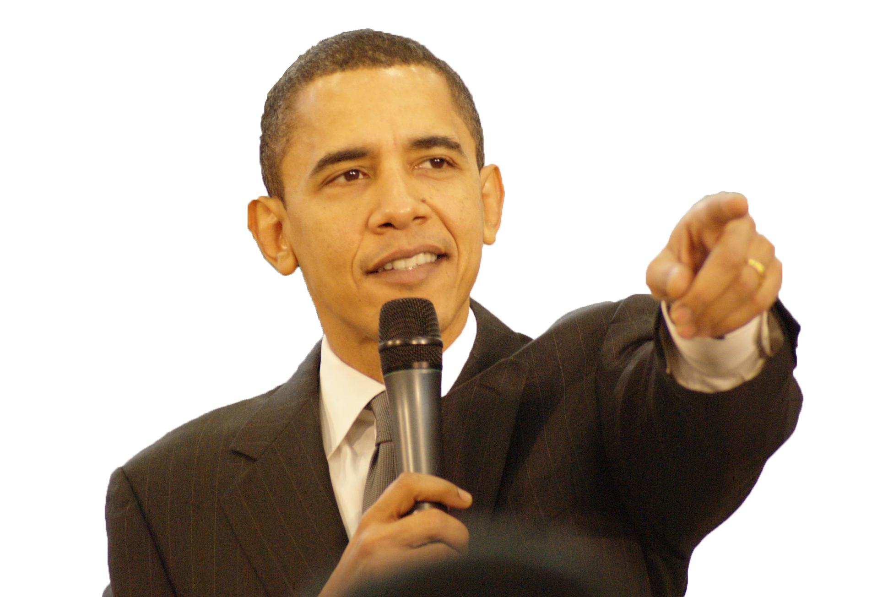

Carly is a student studying Political Science at Tufts University. She has also picked up a minor in computer science. Sometimes Carly wishes she had decided to major in computer science because compsci women defy stereotypes and have the oppotunity to make real people money when they graduate from college. Also, Karlie Kloss is a big advocate of getting girls into computer science and she's a really beautiful supermodel, not to mention Taylor Swift's best friend, so it must be cool. Then again, Political Science is pretty cool too. Here are some of the awesome (or sort of awesome) people of the world who majored in political science.
Pete Wentz, for those of you who don't know, is the bassist of the popular 2000s band, Fall Out Boy. Most of Carly's 11-year-old life was spent pretending to think he was super hot because that's what Emma thought and Emma was her best friend. Secretly, however, Carly thought Pete seemed kind of dark and creepy and the eyeliner-on-men thing isn't really her scene.
Anderson Cooper single-handedly validates Carly's decision to major in Political Science. Cooper's mother, Gloria Vanderbilt, has a networth of approximately 200 million dollars. At one point, the Vanderbilt family's wealth overall was valued at 105 billion dollars. All of this is to say that Anderson Cooper could have easily gone through the rest of his life living in lavish comfort without ever really having to work a day of it. Instead, however, Anderson made his way up the journalistic ranks - after first failing as an entry-level employee of ABC - and today is a 5-time Emmy award winning reporter and an all-around bada**.
Yeah that's right. Drop the mic.
So yeah, I guess its pretty cool to major in Political Science too. And if you're thinking "all those people are men!" Carly would probably say, "astute point, reader!" Looks like being a female Political Science major is a little bit stereotype-defying in its own right. Cool!